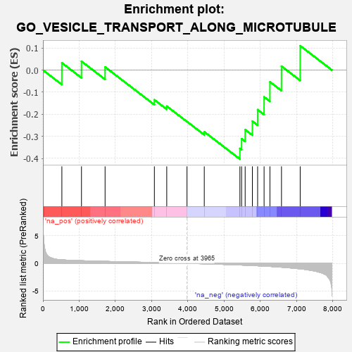
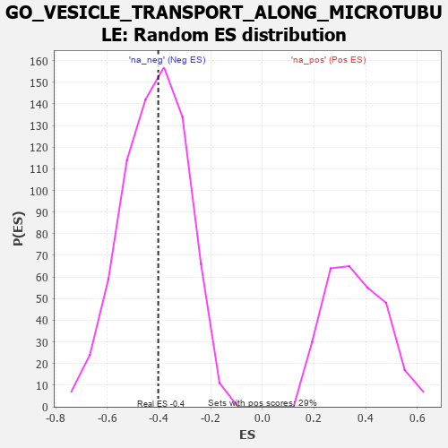

| | | Dataset | 7d |
| Phenotype | NoPhenotypeAvailable |
| Upregulated in class | na_neg |
| GeneSet | GO_VESICLE_TRANSPORT_ALONG_MICROTUBULE |
| Enrichment Score (ES) | -0.40304518 |
| Normalized Enrichment Score (NES) | -0.9626062 |
| Nominal p-value | 0.52100843 |
| FDR q-value | 0.9096612 |
| FWER p-Value | 1.0 |
Table: GSEA Results Summary

Fig 1: Enrichment plot: GO_VESICLE_TRANSPORT_ALONG_MICROTUBULE
Profile of the Running ES Score & Positions of GeneSet Members on the Rank Ordered List
| PROBE | GENE SYMBOL | GENE_TITLE | RANK IN GENE LIST | RANK METRIC SCORE | RUNNING ES | CORE ENRICHMENT | | 1 | KIF23 | | | 522 | 0.622 | 0.0328 | No |
| 2 | AP3S1 | | | 1063 | 0.471 | 0.0396 | No |
| 3 | TRAK1 | | | 1714 | 0.354 | 0.0139 | No |
| 4 | MAP2 | | | 3074 | 0.140 | -0.1348 | No |
| 5 | KIF1A | | | 3415 | 0.088 | -0.1636 | No |
| 6 | AP3B2 | | | 3974 | -0.002 | -0.2334 | No |
| 7 | KIF3B | | | 4450 | -0.085 | -0.2796 | No |
| 8 | AP3S2 | | | 5433 | -0.303 | -0.3551 | Yes |
| 9 | KIF3A | | | 5480 | -0.313 | -0.3112 | Yes |
| 10 | NDE1 | | | 5578 | -0.339 | -0.2697 | Yes |
| 11 | VAMP7 | | | 5777 | -0.399 | -0.2315 | Yes |
| 12 | STK11 | | | 5922 | -0.443 | -0.1795 | Yes |
| 13 | AP3M1 | | | 6100 | -0.506 | -0.1216 | Yes |
| 14 | AP3D1 | | | 6261 | -0.558 | -0.0533 | Yes |
| 15 | CLN3 | | | 6580 | -0.699 | 0.0175 | Yes |
| 16 | RAB1A | | | 7096 | -0.993 | 0.1100 | Yes |
Table: GSEA details [plain text format]

Fig 2: GO_VESICLE_TRANSPORT_ALONG_MICROTUBULE: Random ES distribution
Gene set null distribution of ES for GO_VESICLE_TRANSPORT_ALONG_MICROTUBULE